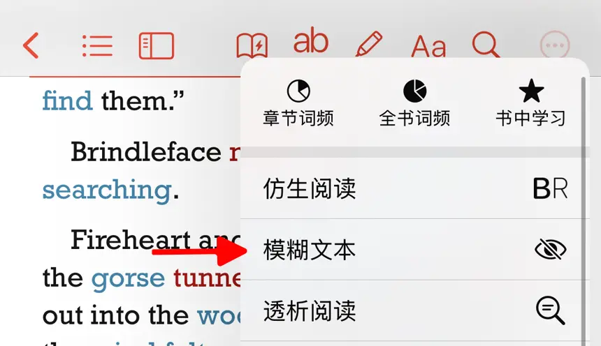

模糊文字功能允許使用者將電子書中的文字內容進行模糊顯示，非常適合用於英語學習中的逐句精聽和復述練習。


使用限制
此功能僅支援文字格式的書籍，不支援 PDF 文件。
如何開啟
按照以下步驟啟用模糊文字功能：
開啟您想要閱讀的電子書。
點選螢幕頂部選單列的 進入模糊文字設定頁面。如果頂部選單列沒有此圖示，請點按 按鈕，然後選擇「模糊文字」。
將開關滑動至「開啟」狀態，以啟動模糊文字功能。啟動後，點選模糊內容即可顯示所點選句子的完整文字。
選項說明
- 自動顯示播放後的句子：開啟後，播放完句子後將自動顯示該句子的文字。
- 點選恢復模糊：開啟後，點選句子文字可在模糊和顯示之間切換。
- 模糊強度：調節模糊效果的強度，數值越高，文字顯示越模糊。
使用場景
模糊文字功能可用於以下英語學習練習。
逐句精聽
利用模糊文字功能進行逐句精聽是一種高效的聽力訓練方法。開啟書籍後，按照以下步驟進行逐句精聽練習：
啟用模糊文字功能
開啟模糊文字功能，將文字中的每一句話設定為模糊。第一遍聽力練習
播放音訊，嘗試抓住大意。此時，文字仍保持模糊，你需要依賴聽力推測模糊部分的內容。這一步幫助鍛鍊聽力推理和語境理解能力。逐句揭示文字
聽完一句後，點選相應的模糊區域，顯示該句的具體文字內容。對照音訊與文字，確認自己是否理解了聽到的內容。如果某部分不理解，可以透過反覆聽模糊文字中的句子，直到完全掌握。回放並鞏固
回放音訊，關注發音、語調、連讀等語言細節。可以透過點選恢復模糊的功能，反覆練習，直到完全理解每個句子的聽力內容。